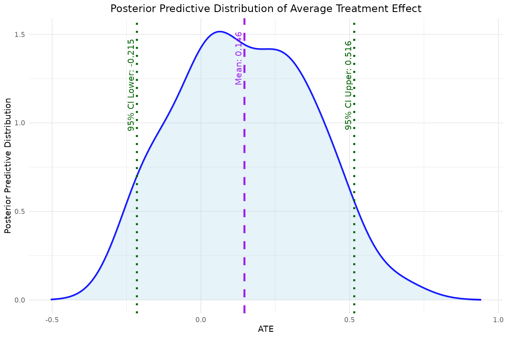
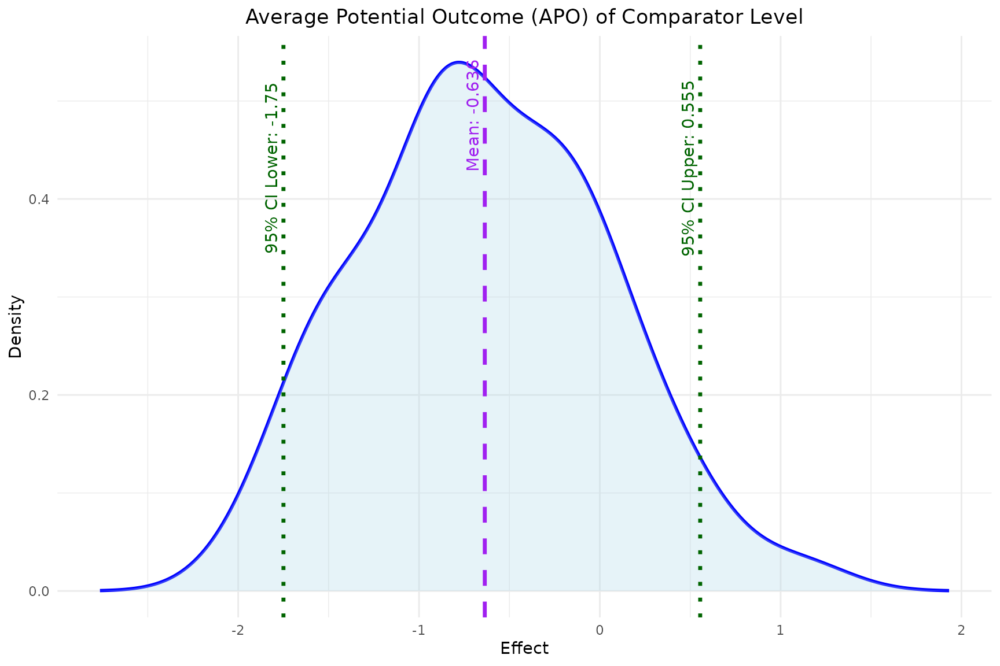
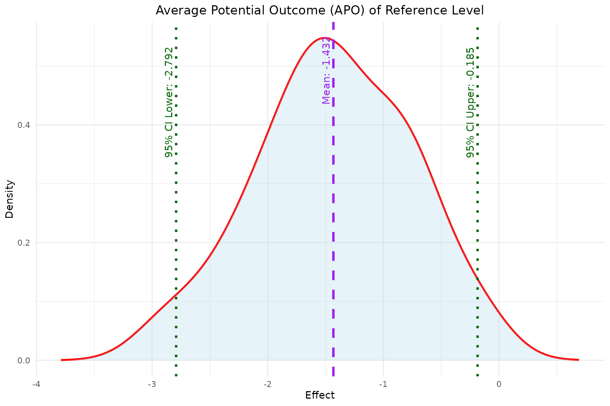
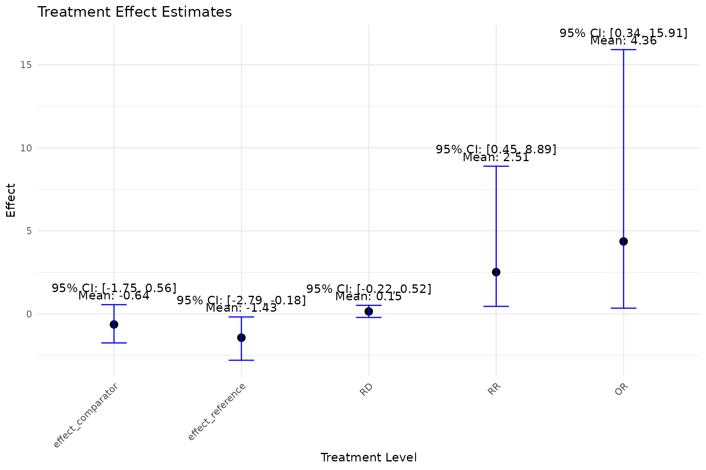

`bayesmsm` for longitudinal data with informative right-censoring
Xiao Yan, Kuan Liu
Source:vignettes/bayesmsm-censoring.Rmd
bayesmsm-censoring.RmdIntroduction
-
The
bayesmsmpackage enables easy implementation of the Bayesian marginal structural models (BMSMs) for longitudinal data. The methodology of BMSMs can be divided into 2 estimation steps:- Step 1. Bayesian treatment effect weight estimation
- Step 2. Bayesian non-parametric bootstrap to maximize the utility function with respect to the causal effect
For Step 1, we estimate treatment weights using posterior samples of the and via fitting a series of logistic regressions in a Bayesian framework. The package is able to handle longitudinal data without and with right-censoring. For Step 2, is estimated via non-parametric Bayesian bootstrap with sampling weights.
-
The main functions in this package include:
-
bayesweight: Calculates Bayesian weights for subject-specific treatment effects. -
bayesweight_cen: Calculates Bayesian weights for subject-specific treatment effects with right-censored data. -
bayesmsm: Estimates marginal structural models using the calculated Bayesian weights. -
plot_ATE: Plots the estimated Average Treatment Effect (ATE). -
plot_APO: Plots the estimated Average Potential Outcome (APO). -
plot_est_box: Plots the distribution of estimated treatment effects. -
summary_bayesmsm: Summarizes the model results frombayesmsm. -
simData: Generates synthetic longitudinal data with optional right-censoring
-
-
Installation
- To install the bayesmsm package, you can use the
devtoolspackage to install it directly from GitHub.
- To install the bayesmsm package, you can use the
Simulated longitudinal observational data with right-censoring
In this vignette, we demonstrate how to simulate a longitudinal
dataset that replicates features of real-world clinical studies with
right-censoring using simData(). Here, we generate data for
200 individuals observed over 2
visits. At each visit, two normally distributed covariates
(L1_j, L2_j) and a binary treatment assignment
(A_j) are created. Right-censoring is induced at each visit
via a logistic model (C_j), and once an individual is
censored at visit j, all subsequent covariates, treatments, and
the end-of-study outcome Y are set to NA. The
outcome Y is binary, drawn from a logistic regression on the
full covariate and treatment history.
| Variable | Description |
|---|---|
L1_1, L2_1
|
Baseline covariates (continuous) |
L1_2, L2_2
|
Time-varying covariates at visit 2 |
A1, A2
|
Binary treatments at visits 1 and 2 |
C1, C2
|
Right-censoring indicators at each visit |
Y |
Binary end-of-study outcome (1 = event) |
# 1) Define coefficient lists for 2 visits
amodel <- list(
# Visit 1: logit P(A1=1) = -0.3 + 0.4*L1_1 - 0.2*L2_1
c("(Intercept)" = -0.3, "L1_1" = 0.4, "L2_1" = -0.2),
# Visit 2: logit P(A2=1) = -0.1 + 0.3*L1_2 - 0.1*L2_2 + 0.5*A_prev
c("(Intercept)" = -0.1, "L1_2" = 0.3, "L2_2" = -0.1, "A_prev" = 0.5)
)
# 2) Define outcome model: logistic on treatments and last covariates
ymodel <- c(
"(Intercept)" = -0.8,
"A1" = 0.2,
"A2" = 0.4,
"L1_2" = 0.3,
"L2_2" = -0.3
)
# 3) Define right-censoring models at each visit
cmodel <- list(
# Censor at visit 1 based on baseline covariates and A1
c("(Intercept)" = -1.5, "L1_1" = 0.2, "L2_1" = -0.2, "A" = 0.2),
# Censor at visit 2 based on visit-2 covariates and A2
c("(Intercept)" = -1.5, "L1_2" = 0.1, "L2_2" = -0.1, "A" = 0.3)
)
# 4) Load package and simulate data
simdat_cen <- simData(
n = 100,
n_visits = 2,
covariate_counts = c(2, 2),
amodel = amodel,
ymodel = ymodel,
y_type = "binary",
right_censor = TRUE,
cmodel = cmodel,
seed = 123
)
# 5) Inspect first rows
head(simdat_cen)
#> L1_1 L2_1 A1 C1 L1_2 L2_2 A2 C2 Y
#> 1 -0.56047565 -0.71040656 1 0 -0.7152422 -0.07355602 1 1 NA
#> 2 -0.23017749 0.25688371 0 0 -0.7526890 -1.16865142 1 0 1
#> 3 1.55870831 -0.24669188 0 0 -0.9385387 -0.63474826 0 0 0
#> 4 0.07050839 -0.34754260 1 0 -1.0525133 -0.02884155 0 0 1
#> 5 0.12928774 -0.95161857 0 0 -0.4371595 0.67069597 1 1 NA
#> 6 1.71506499 -0.04502772 1 0 0.3311792 -1.65054654 1 0 0Bayesian treatment effect weight estimation using
bayesweight_cen
Next, we use the bayesweight_cen function to estimate
the weights with censoring. We specify the treatment and censoring
models for each time point, including the relevant covariates.
- Parameters Description:
-
trtmodel.list: A list of formulas corresponding to each time point with the time-specific treatment variable on the left hand side and pre-treatment covariates to be balanced on the right hand side. Interactions and functions of covariates are allowed. -
cenmodel.list: A list of formulas of the censoring model with the censoring indicators on the left hand side and the covariates prior to the censoring indicators on the right hand side. -
data: The dataset containing all the variables specified in trtmodel.list. -
n.chains: Number of MCMC chains to run. For non-parallel execution, this should be set to 1. For parallel execution, it requires at least 2 chains. -
n.iter: Total number of iterations for each chain (including burn-in). -
n.burnin: Number of iterations to discard at the beginning of the simulation (burn-in). -
n.thin: Thinning rate for the MCMC sampler. -
seed: Seed to ensure reproducibility. -
parallel: Logical flag indicating whether to run the MCMC chains in parallel. Default is TRUE.
-
weights_cen <- bayesweight_cen(
trtmodel.list = list(
A1 ~ L1_1 + L2_1,
A2 ~ L1_2 + L2_2 + A1),
cenmodel.list = list(
C1 ~ L1_1 + L2_1 + A1,
C2 ~ L1_2 + L2_2 + A2),
data = simdat_cen,
n.chains = 1,
n.iter = 200,
n.burnin = 100,
n.thin = 1,
seed = 890123,
parallel = FALSE)
#> Compiling model graph
#> Resolving undeclared variables
#> Allocating nodes
#> Graph information:
#> Observed stochastic nodes: 700
#> Unobserved stochastic nodes: 21
#> Total graph size: 2495
#>
#> Initializing model
summary(weights_cen$weights)
#> Min. 1st Qu. Median Mean 3rd Qu. Max. NA's
#> 0.6241 1.2029 1.9547 2.7377 2.9418 18.9279 25Similarly, the function will automatically run MCMC with JAGS based on the specified treatment and censoring model inputs, generating a JAGS model string as part of the function output. The function returns a list containing the updated weights for subject-specific treatment and censoring effects as well as the JAGS model.
- We can print and view the JAGS model stored in
model_stringfrom the above function output:
cat(weights_cen$model_string)
#> model{
#>
#> for (i in 1:N1) {
#>
#> # conditional model;
#> A1[i] ~ dbern(p1[i])
#> logit(p1[i]) <- b10 + b11*L1_1[i] + b12*L2_1[i]
#> C1[i] ~ dbern(cp1[i])
#> logit(cp1[i]) <- s10 + s11*L1_1[i] + s12*L2_1[i] + s13*A1[i]
#>
#> # marginal model;
#> A1s[i] ~ dbern(p1s[i])
#> logit(p1s[i]) <- bs10
#> C1s[i] ~ dbern(cp1s[i])
#> logit(cp1s[i]) <- ts10
#> }
#>
#> for (i in 1:N2) {
#>
#> # conditional model;
#> A2[i] ~ dbern(p2[i])
#> logit(p2[i]) <- b20 + b21*L1_2[i] + b22*L2_2[i] + b23*A1[i]
#> C2[i] ~ dbern(cp2[i])
#> logit(cp2[i]) <- s20 + s21*L1_2[i] + s22*L2_2[i] + s23*A2[i]
#>
#> # marginal model;
#> A2s[i] ~ dbern(p2s[i])
#> logit(p2s[i]) <- bs20 + bs21*A1s[i]
#> C2s[i] ~ dbern(cp2s[i])
#> logit(cp2s[i]) <- ts20 + ts21*A1s[i]
#> }
#>
#> # Priors
#> b10 ~ dunif(-10, 10)
#> b11 ~ dunif(-10, 10)
#> b12 ~ dunif(-10, 10)
#> s10 ~ dunif(-10, 10)
#> s11 ~ dunif(-10, 10)
#> s12 ~ dunif(-10, 10)
#> s13 ~ dunif(-10, 10)
#> bs10 ~ dunif(-10, 10)
#> ts10 ~ dunif(-10, 10)
#> b20 ~ dunif(-10, 10)
#> b21 ~ dunif(-10, 10)
#> b22 ~ dunif(-10, 10)
#> b23 ~ dunif(-10, 10)
#> s20 ~ dunif(-10, 10)
#> s21 ~ dunif(-10, 10)
#> s22 ~ dunif(-10, 10)
#> s23 ~ dunif(-10, 10)
#> bs20 ~ dunif(-10, 10)
#> bs21 ~ dunif(-10, 10)
#> ts20 ~ dunif(-10, 10)
#> ts21 ~ dunif(-10, 10)
#> }Bayesian non-parametric bootstrap to maximize the utility function
with respect to the causal effect using bayesmsm
Using the weights estimated by bayesweight_cen, we now
fit the Bayesian Marginal Structural Model and estimate the marginal
treatment effects using the bayesmsm function as before. We
specify the outcome model and other relevant parameters.
- Parameters Description:
-
ymodel: A formula representing the outcome model, which can include interactions and functions of covariates. -
nvisit: Specifies the number of visits or time points considered in the model. -
reference: The baseline or reference intervention across all visits, typically represented by a vector of zeros indicating no treatment (default is a vector of all zeros). -
comparator: The comparison intervention across all visits, typically represented by a vector of ones indicating full treatment (default is a vector of all ones). -
treatment_effect_type: A character string specifying the type of treatment effect to estimate. Options are “sq” for sequential treatment effects, which estimates effects for specific treatment sequences across visits, and “cum” for cumulative treatment effects, which assumes a single cumulative treatment variable representing the total exposure. The default is “sq”. -
family: Specifies the outcome distribution family; use “gaussian” for continuous outcomes or “binomial” for binary outcomes (default is “gaussian”). -
data: The dataset containing all variables required for the model. -
wmean: A vector of treatment assignment weights. Default is a vector of ones, implying equal weighting. -
nboot: The number of bootstrap iterations to perform for estimating the uncertainty around the causal estimates. -
optim_method: The optimization method used to find the best parameters in the model (default is ‘BFGS’). -
seed: A seed value to ensure reproducibility of results. -
parallel: A logical flag indicating whether to perform computations in parallel (default is TRUE). -
ncore: The number of cores to use for parallel computation (default is 4).
-
# Remove all NAs (censored observations) from the original dataset and weights
simdat_cen$weights <- weights_cen$weights
simdat_cen2 <- na.omit(simdat_cen)
model <- bayesmsm(ymodel = Y ~ A1 + A2,
nvisit = 2,
reference = c(rep(0,2)),
comparator = c(rep(1,2)),
family = "binomial",
data = simdat_cen2,
wmean = simdat_cen2$weights,
nboot = 50,
optim_method = "BFGS",
parallel = TRUE,
seed = 890123,
ncore = 2)
str(model)
#> List of 12
#> $ RD_mean : num 0.146
#> $ RR_mean : num 2.51
#> $ OR_mean : num 4.36
#> $ RD_sd : num 0.22
#> $ RR_sd : num 2.25
#> $ OR_sd : num 5.96
#> $ RD_quantile: Named num [1:2] -0.215 0.516
#> ..- attr(*, "names")= chr [1:2] "2.5%" "97.5%"
#> $ RR_quantile: Named num [1:2] 0.453 8.895
#> ..- attr(*, "names")= chr [1:2] "2.5%" "97.5%"
#> $ OR_quantile: Named num [1:2] 0.345 15.914
#> ..- attr(*, "names")= chr [1:2] "2.5%" "97.5%"
#> $ bootdata :'data.frame': 50 obs. of 5 variables:
#> ..$ effect_reference : num [1:50] -0.791 -0.651 -0.741 -0.877 -1.844 ...
#> ..$ effect_comparator: num [1:50] -1.098 -1.939 -0.379 -1.481 -0.831 ...
#> ..$ RD : num [1:50] -0.0619 -0.2169 0.0835 -0.1085 0.1669 ...
#> ..$ RR : num [1:50] 0.802 0.367 1.259 0.631 2.222 ...
#> ..$ OR : num [1:50] 0.736 0.276 1.436 0.547 2.755 ...
#> $ reference : num [1:2] 0 0
#> $ comparator : num [1:2] 1 1The bayesmsm function returns a model object containing
the following: the mean, standard deviation, and 95% credible interval
of the Risk Difference (RD), Risk Ratio (RR), and Odds Ratio (OR). It
also includes a data frame containing the bootstrap samples for the
reference effect, comparator effect, RD, RR, and OR, as well as the
reference and comparator levels chosen by the user.
- Summary function to generate result table from
bayesmsm- The
summary_bayesmsmfunction automatically generates a summary table of the model output from the functionbayesmsm.
- The
summary_bayesmsm(model)
#> mean sd 2.5% 97.5%
#> Reference -1.4320309 0.6712919 -2.7921195 -0.1847785
#> Comparator -0.6362027 0.6711850 -1.7496915 0.5551147
#> RD 0.1463972 0.2199628 -0.2150885 0.5155204
#> RR 2.5137979 2.2490552 0.4526227 8.8946165
#> OR 4.3640132 5.9617061 0.3449483 15.9140163Visualization functions: plot_ATE,
plot_APO, plot_est_box
Similarly, we can use the built-in functions as well as
summary_bayesmsm to visualize and summarize the
results.
- Plotting the Average Treatment Effect (ATE)
- The
plot_ATEfunction generates a plot of the estimated ATE with its 95% credible interval.
- The
plot_ATE(model)
- Plotting the Average Potential Outcome (APO)
- The
plot_APOfunction plots the estimated APO for both the reference and comparator level effects.
- The
plot_APO(model, effect_type = "effect_comparator")
plot_APO(model, effect_type = "effect_reference")
- Plotting the Distribution of Estimated Treatment Effects
- The
plot_est_boxfunction generates an error bar plot of the estimated treatment effects (APO and ATE) from the bootstrap samples.
- The
plot_est_box(model)
Reference
- Saarela, O., Stephens, D. A., Moodie, E. E. M., & Klein, M. B. (2015). On Bayesian estimation of marginal structural models. Biometrics, 71(2), 279–288. https://doi.org/10.1111/biom.12269
- Robins, J. M., Hernán, M. A., & Brumback, B. (2000). Marginal structural models and causal inference in epidemiology. Epidemiology, 11(5), 550–560. https://doi.org/10.1097/00001648-200009000-00011
- Liu, K., Saarela, O., Feldman, B. M., & Pullenayegum, E. (2020). Estimation of causal effects with repeatedly measured outcomes in a Bayesian framework. Statistical Methods in Medical Research, 29(9), 2507–2519. https://doi.org/10.1177/0962280219900362